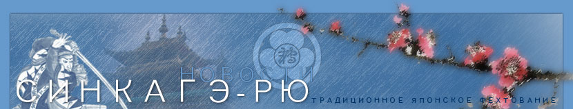
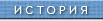
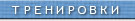
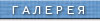
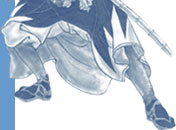
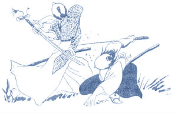
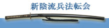

 |
 |
 |


- 24.11.2018
Зимний семинар по Синкагэрю под руководством Переверзева Игоря,
с участием Ичикава сан будет проходить в Нижнем Новгороде
4 января 2019 (пятница) с 17:00 до 21:00
5 января 2019 (суббота) с 11:00 до 15:00
6 января 2019 (воскресенье) с 11:00 до 15:00
по адресу : г.Нижний Новгород, пер. Университетский д.4,
спорткомплекс ДИНАМО (за кинотеатром *Орленок*)
Ответственный : Чубарь Дмитрий, 89050146894, marobasi@yandex.ru
Стоимость участия в семинаре - 150 $ - 06.06.2018
Летний семинар по Синкагэ-рю под руководством Переверзева Игоря,
3 августа (пятница) - вечерняя тренировка с 19.00 до 22.00,
4 августа (суббота) - утренняя тренировка с 10.00 до 13.00 (на Юго-Западе), потом перерыв 3 часа,
4 августа (суббота) - вечерняя тренировка с 16.00 до 20.00
В Москве в здании Московского технологического университета МИТХТ Физкультурно-оздоровительный комплекс, по адресу:
Проспект Вернадского, 86с9 (метро Юго-Западная).
Стоимость участия – 150$ (50$/тренировка). - 31.05.2018
Расписание занятий на летние месяцы 2018 года в с/к Динамо:
вторник 19:00-20:30
четверг 19:00-20:30
суббота 11:00-12:30 - 09.12.2017
Зимний семинар по Синкагэрю под руководством Переверзева Игоря,
с участием Ичикава сан будет проходить
5 января 2018 с 19:00 до 22:00
6 января 2018 с 11:00 до 15:00
7 января 2018 с 11:00 до 15:00
В Москве в здании Московского технологического университета МИТХТ Физкультурно-оздоровительный комплекс, по адресу:
Проспект Вернадского, 86с9 (метро Юго-Западная).
Стоимость участия – 150$ (50$/день). - 01.09.2017
С первого сентября занятия в с/к Динамо по обычному расписанию:
вторник 20:30-22:00
четверг 20:30-22:00
суббота 11:00-12:30 - 31.05.2017
Расписание занятий на летние месяцы 2017 года в с/к Динамо:
вторник 19:00-20:30
четверг 19:00-20:30
суббота 11:00-12:30 - 30.11.2016
Зимний семинар будет проходить 03, 04, 05 января 2017 в г.Москва с 11:00 до 15:00
по адресу: Проспект Вернадского, 86с9 (метро Юго-Западная)
Московский технологический университет МИТХТ Физкультурно-оздоровительный комплекс.
Стоимость семинара для иногородних : 100$
- 30.08.2016
С первого сентября занятия в с/к Динамо по обычному расписанию:
вторник 20:30-22:00
четверг 20:30-22:00
суббота 11:00-12:30 - 31.05.2016
Расписание занятий на летние месяцы 2016 года в с/к Динамо:
вторник 19:00-20:30
четверг 19:00-20:30
суббота 11:00-12:30 - 24.04.2016
28-29 мая 2016г. состоится региональный семинар. Место: Московская обл., Лотошинский район, деревня Орешково. В программе: тренировки утром и вечером в субботу с перерывам на обед и отдых, вечером баня. Воскресенье : завтрак, тренировка, обед и отъезд. Стоимость с питанием 3000. Нижегородцам, желающим принять участие, сообщать Дмитрию Чубарю. - 01.09.2015
С первого сентября занятия в с/к Динамо по обычному расписанию:
вторник 20:30-22:00
четверг 20:30-22:00
суббота 11:00-12:30 - 10.06.2015
Летний семинар под руководством сихана Российского маробасикай Наразаки Нобуки в Нижнем Новгороде пройдет с 7 по 9 августа 2015 г. Эта информация предварительная, сроки проведения семинара могут измениться. - 01.06.2015
Расписание занятий на летние месяцы 2015 года в с/к Динамо:
вторник 19:00-20:30
четверг 19:00-20:30
суббота 11:00-12:30 - 30.11.2014
Приглашаем на ЭМБУ (показательные выступления), посвященную 20-летию Нижегородского филиала школы Синкагэ-рю Хёхо Маробасикай.
Эмбу состоится в субботу, 20 декабря 2014 в 11.00 в спорткомплексе "Динамо" (пер. Университетский за к/т "Орленок"). - 29.11.2014
Внимание! Зимний семинар в Москве.
2 января - Игорь Переверзев (кайден)
3,4,5,6 января - сихан Российского маробасикай Наразаки Нобуки.
Семинар будет проходить 2 января 2014 года с 11:00 до 15:00,
3,4,5,6 января с 10:00 до 14:00
Место проведения: Покрышкин додзё (ул. Покрышкина д.3; 10 минут пешком от М. Юго-Западная) - 01.09.2014
С 1 сентября 2014 г. занятия проходят по обычному расписанию, в с/к Динамо:
вторник 20:30-22:00
четверг 20:30-22:00
суббота 11:00-12:30 - 11.07.2014
Вечерние тренировки в спорткомплексе "Динамо" c 15 по 29 июля будут начинаться с 20:30. Суббота без изменений. Тренировки будут проходить в зале борьбы, т.к. зал спецподготовки на ремонте с 12 июля. - 09.07.2014
Внимание :
Летний семинар под руководством сихана Российского маробасикай Наразаки Нобуки в Нижнем Новгороде с 25 по 27 июля 2014г. будет проходить в спорткомплексе "Динамо" (переулок Университетский) за кинотеатром "Орленок" .
- 25 июля (пятница) с 18:00 до 21:00
- 26 июля (суббота) с 10:00 до 14:00
- 27 июля (воскресенье) с 10:00 до 14:00
Стоимость участия в семинаре - 150 $
Для иногородних адрес недорогой гостиницы :
Нижний Новгород, ул.Кулибина д.2 , гостиница НГТУ , тел. 8(831)4332308 - 01.06.2014
Расписание занятий на летние месяцы 2014 года в с/к Динамо:
вторник 19:00-20:30
четверг 19:00-20:30
суббота 11:00-12:30 - 26.02.2014
Летний семинар под руководством сихана Наразаки Нобуки (степень кайден) пройдет в Нижнем Новгороде 25,26,27 июля 2014 г. - 23.01.2014
Поздравляем аттестованных по итогам зимнего семинара! - 31.12.2013
Поздравляем всех с наступающим Новым Годом!
В разделе "Тренировки" изменено расписание занятий первой группы.
Семинар состоится в Москве, подробности на www.sinkage.ru - 29.03.2012
В разделе "Тренировки" поправлено расписание и степени ведущих. - 21.09.2011
В разделе "Тренировки" изменена информация по второй группе.
Благодарим Игоря Переверзева за успешно проведенный семинар в Нижнем Новгороде в августе. - 22.04.2011
В разделе "Тренировки" добавлена информация по второй группе. - 28.01.2011
В разделе "Галерея" добавлены фоты c прошедшего семинара с Игорем Переверзевым в Москве. - 13.10.2010
В разделе "Тренировки" добавлена информация по дополнительному залу! - 04.08.2010
Поздравляем с успешным окончанием семинара в Москве всех его участников!
Прекратились тренировки на ул.Пушкина. - 24.03.2010
В галерею добавлены фото с прошедшего зимнего семинара. - 15.02.2010
Возобновились тренировки на ул.Пушкина. - 11.01.2010
Поздравляем с успешным окончанием семинара всех его участников! Аттестованы почти все. С Новым Годом! С Новой техникой! - 30.12.2009
Внимание начинающим! В новом году тренировки на ул.Пушкина,8 пока не определены. Поэтому со 02.01.2010 всем приходить в СК Динамо по Сб в 10:00. - 20.12.2009
8, 9, 10 января 2010 года в Нижнем Новгороде состоится семинар под руководством господина Наразаки Нобуки. Время: 10:00-15:00. Место проведения СК Динамо. Взнос участника: 150$. - ..
6, 7, 8 января 2008 года в Москве состоится традиционный зимний семинар под руководством господина Наразаки Нобуки. - ..
Обратите внимание на изменения в расписании занятий!!! - ..
Летний семинар под руководством сихана российского отделения Маробасикай господина Наразаки Нобуки состоится в Москве 3-6 августа и в Челябинске 8-10 августа 2007 года
Расписание и место проведения занятий в Москве будет уточнено позже. Взнос участника: до 31 мая 100$, с 1 июня 150$. - ..
14 февраля 2007 состоялся мини-семинар под руководством и при участии легендарного Игоря Переверзева. Пропустившие не могут даже представить, что они потеряли...
